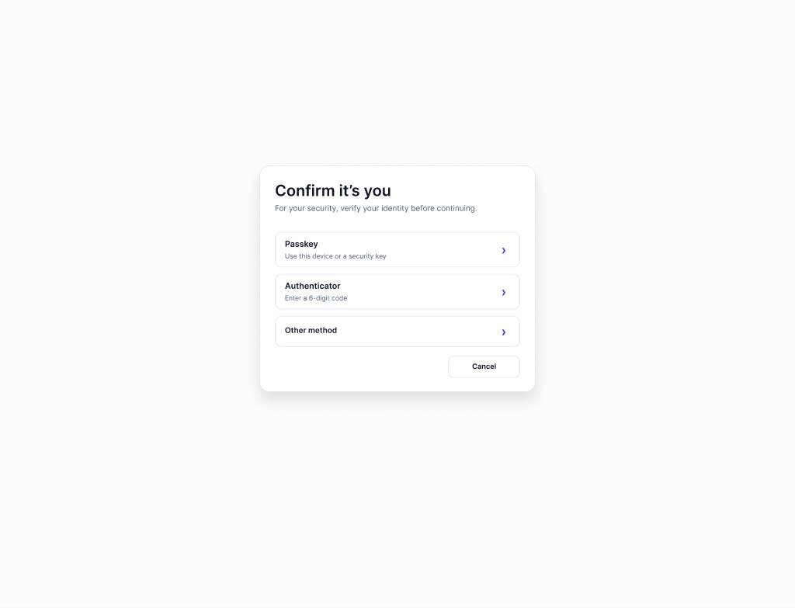
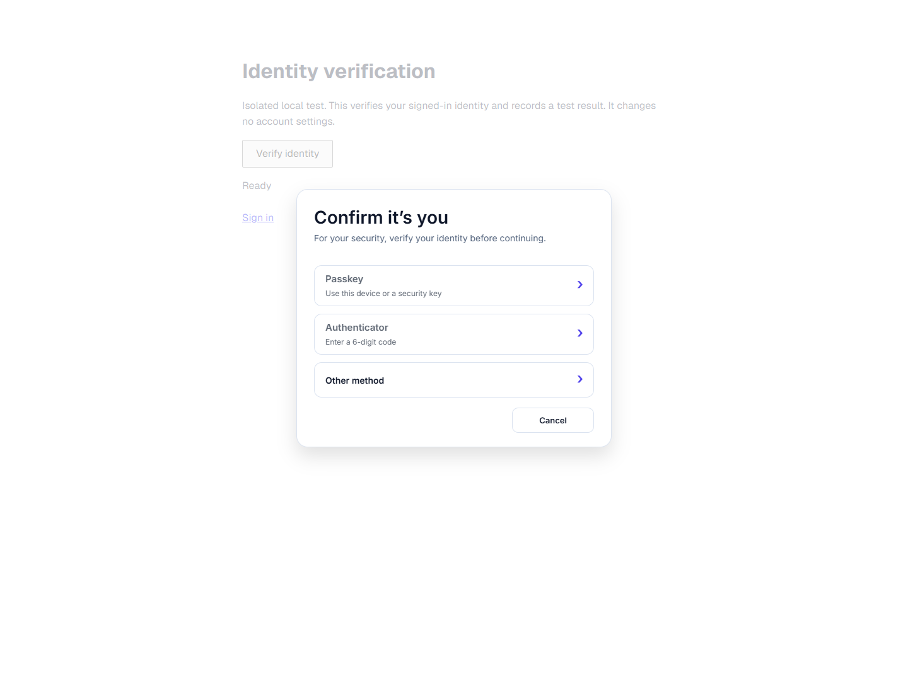
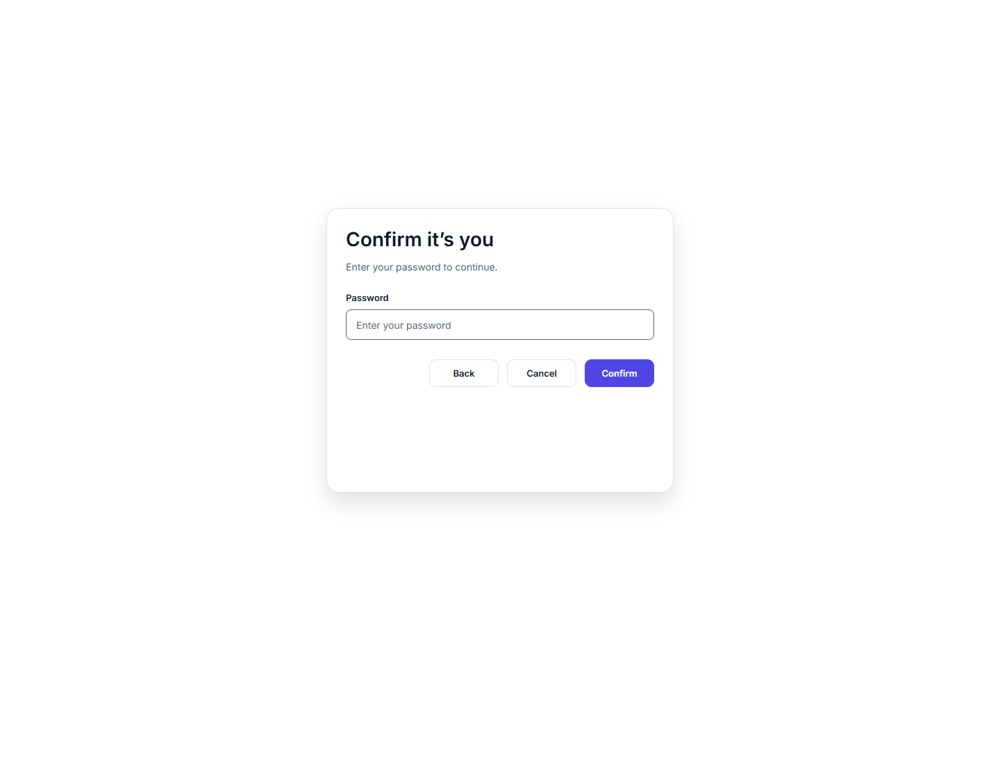
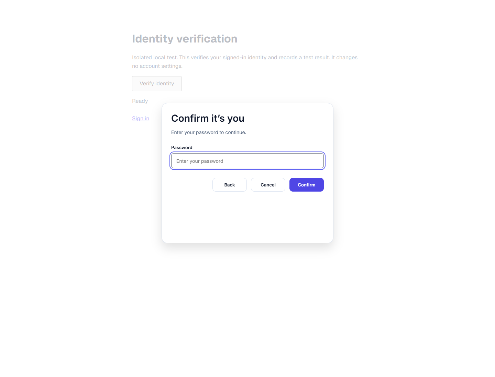
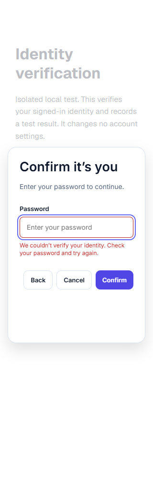
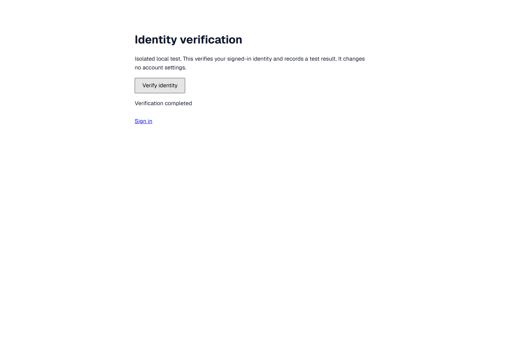

Approved Figma composition / actual desktop


The disabled methods are within the explicit approval. Background content is the local test carrier; no Account Center implementation is claimed.
Engineering PASS at a2df3359f8092e1e816125fe384e7a8a86785c68. The Product Owner approved only method availability, password detail/copy and shared responsive/interaction adaptations. Figma and Drive remain read-only.
147 backend,31 unit/theme,77 browser and7 starter checks passed. Production providers, sensitive-operation owner integrations, protected-main merge and release are separate.


The disabled methods are within the explicit approval. Background content is the local test carrier; no Account Center implementation is claimed.




Details: test index, visual review and prior-capture comparison.35 of42 old captures are byte-identical; seven differ by at most2/255 per color channel.